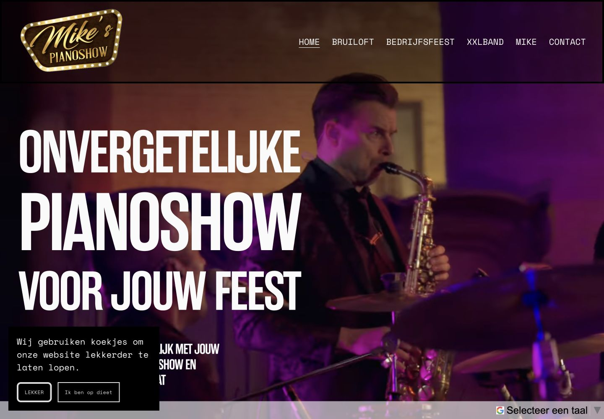
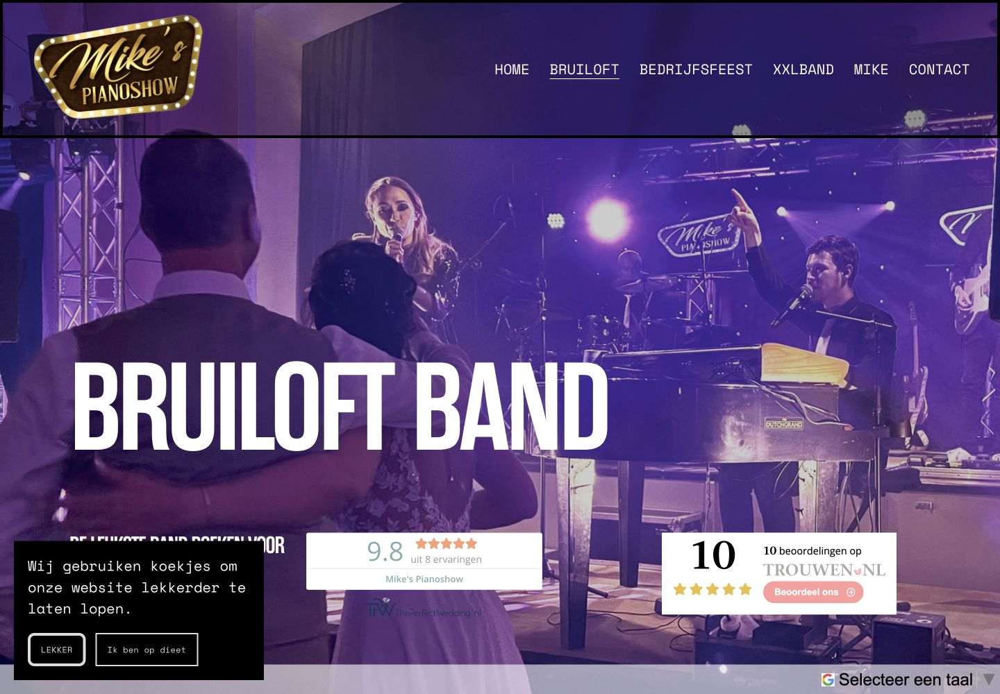
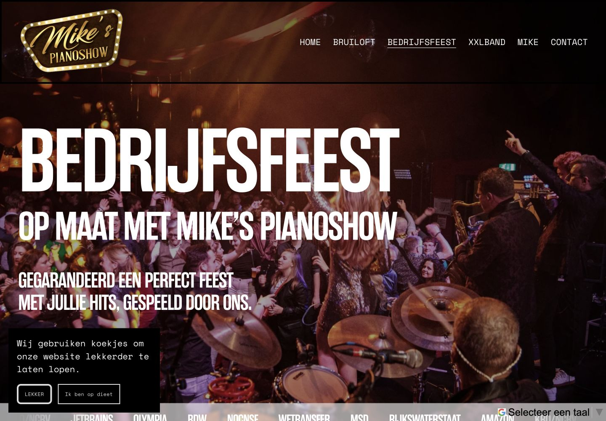
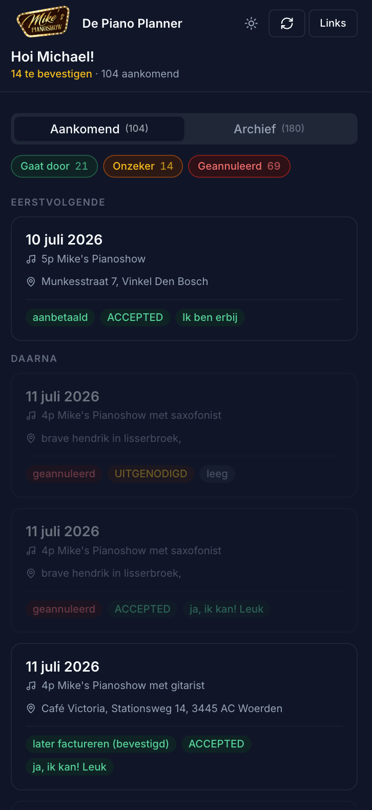

Case
Mike's Pianoshow
Voor Mike's Pianoshow bouwde en onderhoud ik de website als basis voor boekingsaanvragen. Toen het aantal optredens en artiesten groeide, kwam daar een maatwerk planningapp bij die boekingen, beschikbaarheid en reacties bij elkaar brengt.




Vraag
Bezoekers moesten zonder omwegen kunnen boeken.
Bezoekers moesten kunnen beoordelen of de show bij hun feest of evenement past en direct zien hoe zij een boeking aanvragen. De inhoud en mobiele route zijn daarop ingericht.
- Updates, beveiliging en technisch onderhoud uit handen genomen.
- Google-advertenties ingericht en bijgestuurd op relevante aanvragen.
Resultaat
Eerst boekingen, daarna planning
De website bleef de basis voor boekingsaanvragen, advertenties en beheer. Toen de planning het volgende knelpunt werd, is een aparte planningapp toegevoegd.
“Joris heeft meerdere websites voor me gemaakt, die allemaal er goed uitzien en leiden tot meer sales. Hij denkt ook zelf na en komt met goede suggesties ipv dat hij alleen maar dom uitvoert.”
Doorontwikkeling
Meer optredens plannen zonder overzicht te verliezen.
Naarmate Mike's Pianoshow groeit, wordt planning belangrijker dan alleen aanvragen binnenkrijgen. Boekingen moeten worden bevestigd, artiesten moeten weten wanneer ze nodig zijn en hun beschikbaarheid moet bekend zijn.
De Piano Planner brengt die informatie bij elkaar in een mobiele omgeving. Het team houdt zo overzicht terwijl het aantal optredens en artiesten groeit.
- Maatwerk planningapp voor aankomende en gearchiveerde boekingen.
- Overzicht van bevestigde, onzekere en geannuleerde optredens.
- Beschikbaarheid en reacties van artiesten op een centrale plek.
- Locatie-, tijd- en statusinformatie direct zichtbaar per boeking.
Herkenbaar?
Groeit je bedrijf terwijl je planning achterblijft?
Ik kijk met je mee naar wat eerst aandacht nodig heeft: de boekingsroute, de planning of wat daartussen gebeurt.